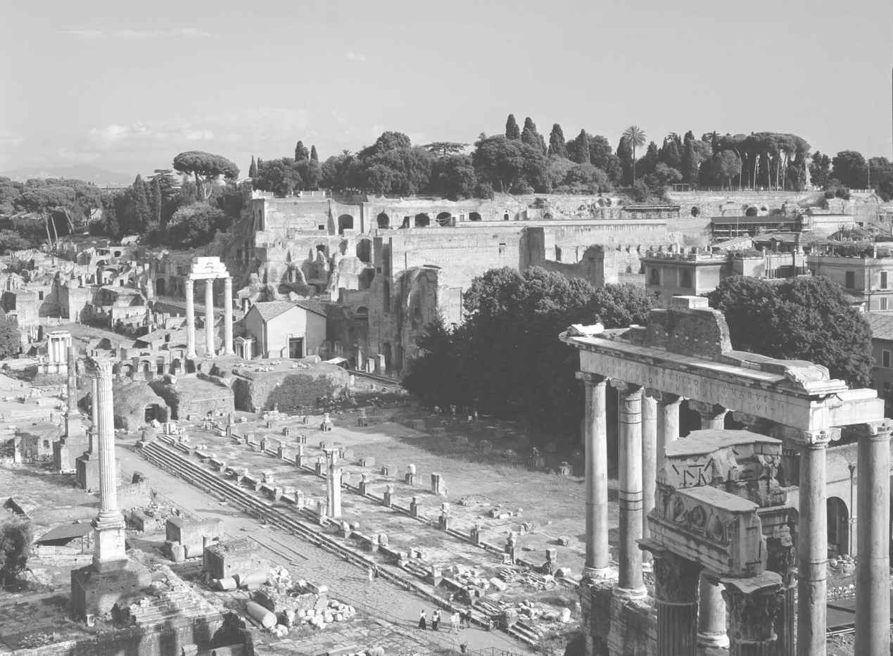
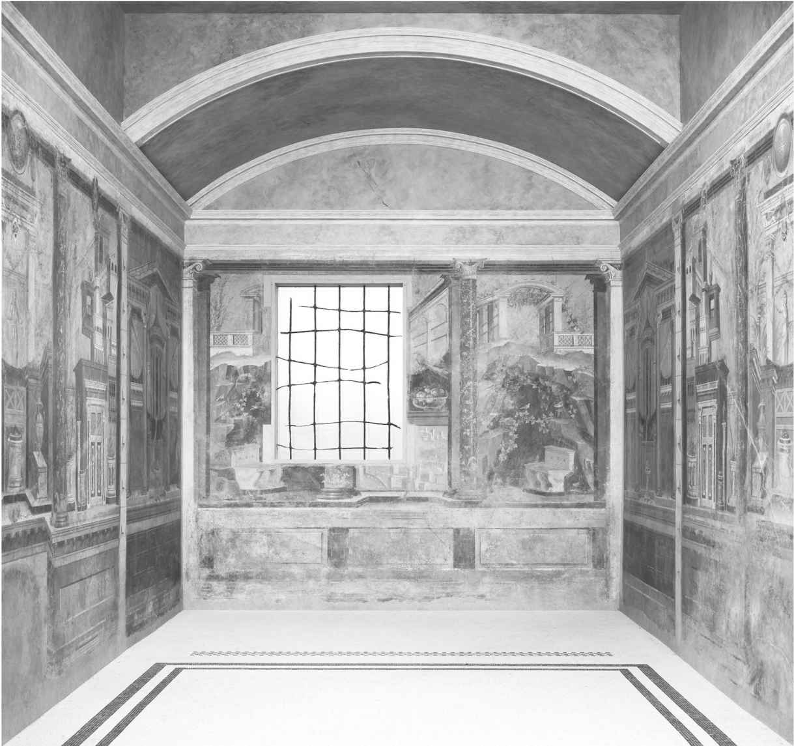

罗马共和国的兴亡是一段非凡的佳话。但罗马从一个蕞尔城邦蜕变成帝国霸主，并不只是由一个个军事征伐和政治危机组成的故事。文学和艺术使古罗马人的生活重获生机，将我们的视线带到行进中的罗马军团和元老院辩论声以外的地方。从早期的剧作家普劳图斯和泰伦提乌斯，到卡图卢斯、西塞罗和凯撒这一代，生活于罗马共和国时期的作家们所发出的声音，一直在当今世界中回荡。罗马共和国艺术的价值一直未得到应有的重视，却在绝佳的半身雕像及被掩埋了的庞贝古城保留下来的极其精美的壁画中得以再现。这些成就本身值得关注，并为首位皇帝奥古斯都治下罗马文化的黄金时代打下基础。
和政治、军事史一样，在文化领域，罗马的萌芽阶段笼罩在历史的面纱之下。公元前3世纪以前，罗马人从事文字活动的踪迹杳无可寻。艺术上的成就当然存在，但历经时间洗礼而保留下来的东西微乎其微。可以确定的是，像罗马生活中的其他方面一样，罗马文化从一开始就从周边民族的传统中获取灵感。北方的伊特鲁里亚人和南部的希腊人从较早时期便对罗马文化产生影响。随着罗马越来越多地介入东部希腊语区，在文化上希腊对罗马造成的影响不可避免地进一步增强。然而，罗马文化依然保持着自身的特色。在罗马，正如在其他地方一样，我们可以发现罗马人天才地吸收和同化了其他民族的许多特质，将他们的模式转化成全新而独特的罗马文化。
拉丁文学的出现正是这种天才性的吸收和改造的见证。我们手头拥有的少量证据显示，到公元前3世纪，在罗马，人们通过书写保存记录，形成法律和宗教条例。只有贵族精英才拥有读写能力，而竞赛和地方性的戏剧表演提供了公共娱乐活动。文学是通过意大利南部的希腊城市进入罗马的，大规模地将古典希腊文学作品和文学流派改编成拉丁语版本也始于这一时期。有名可考的最早的拉丁诗人是一个来自塔兰托的希腊人，他叫李维乌斯·安德罗尼库斯（约公元前280—前200）。他最初被作为奴隶带到罗马，获得自由后成了一名教师和剧作家。尽管他的作品目前只有少量残篇保留下来，但不难看出其创作灵感来自何方。安德罗尼库斯用拉丁文翻译了荷马的《奥德赛》，这一拉丁译本在罗马学校中被沿用了数个世纪。他创作的悲剧同样深受特洛伊战争中的故事和英雄们的影响。
在下一代，这种对希腊灵感和范例的依赖由于罗马喜剧的兴起而获得了新的表达方式。早期拉丁作家中的两位喜剧作家，提图斯·马克奇乌斯·普劳图斯（约公元前254—前184）和普布利乌斯·泰伦提乌斯·阿菲尔（约公元前195—前159）为我们保存了这一时期最主要的文学资料。二人均非出生于罗马城。普劳图斯来自翁布里亚，而泰伦提乌斯则是北非奴隶出身，但两人均对罗马文化产生了深远的影响。大约有21部普劳图斯创作的剧本几乎完整地保存至今（这个数量大约是最初产量的一半略低）。泰伦提乌斯有六部作品为今人所知。他们的喜剧在罗马城邦赛会和元老家族的葬礼仪式上上演，是我们获悉罗马共和国的社会和价值观的资源宝库。但同样，这些剧本均改编自希腊原著。这里节选普劳图斯最为人熟知的一部剧本《吹牛军人》（Miles Gloriosus ）开场白中的一段，我们来看一下他是如何进行改编的：
该喜剧根据一部亡佚的希腊原作改编而成。故事发生在小亚细亚地区的希腊城市以弗所。从剧中主角的名字佩里普勒克托墨诺斯（大意为堡垒的有力征服者）来看，这名傲慢自大的雇佣兵可能是希腊人而非罗马人。而剧中的明星是帕雷斯特里奥，也就是宣布开场白和最终搞垮那名军人的人。这个聪明的奴隶是普劳图斯戏剧角色中的常客。他在普劳图斯的作品中所扮演的角色要比在希腊原著中更为亮眼，明显引起了罗马观众的好感。普劳图斯对道德的强调也契合了罗马的社会背景，同粗俗和嬉闹一道成了剧本的一大特色。结果就形成了一种罗马—希腊戏剧形式的混合体，造成的影响超出了它的罗马共和国之根源，从莎士比亚的《错误的喜剧》到《春光满古城》 [1] 均可捕捉到其踪影。
和戏剧一样，罗马历史编纂的源头同样可以追溯到希腊人那里，后者是“历史”（historia ，本意为“探寻”）一词的最早发明者。参与了第二次布匿战争的罗马元老昆图斯·法比乌斯· 皮克托是第一个罗马本土历史学家，其创作罗马史的年代大约在公元前200年。值得注意的是，他并非用拉丁语而是用希腊语进行历史著述的。到这一时期为止，已经有几部希腊语的罗马史书问世。最初，也正是这些希腊历史学家将罗马人的起源上溯至特洛伊战争、埃涅阿斯的旅行以及其他的荷马英雄时代。就像法比乌斯·皮克托一样，罗马人吸纳并发展了这些故事。皮克托的著作现已失传，但他将罗马同埃涅阿斯之间的联系掺杂进意大利本土寓言和传说中，创造出罗慕路斯和雷穆斯的起源神话。正是在希腊和罗马传统的交融环境下，罗马人对自身起源及历史认同的感知开始形成。法比乌斯·皮克托用希腊人的方式讲述罗马故事，带有希腊人观察古代的眼光。但其作品中所体现的价值观却是罗马式的，同时断言了在更为辽阔的地中海世界罗马所占据的独特地位。
在法比乌斯·皮克托之前，罗马共和国仅有的历史资料是那些豪门权贵家族自我标榜式的家庭记录，以及神职祭司团体所保管的官员名册和大事记。用拉丁文创作的历史著作最终产生于公元前2世纪早期。昆图斯·恩尼乌斯（约公元前239—前169）并不是一名用散文体书写历史的史学家，而是一个诗人。他的《编年纪》（Annales ）是一部史诗，讲述了从特洛伊毁灭到他所生活的时代的罗马史。在这部史诗的开头附近，恩尼乌斯宣称他曾梦见荷马浮现于眼前，而自封为荷马化身。和法比乌斯·皮克托一样，他也将荷马史诗中的传说和罗马传统结合起来。《编年纪》始终被认为是罗马民族最伟大的史诗作品，直到被维吉尔的《埃涅阿斯纪》（Aeneid ）所取代。然而，令人遗憾的是，恩尼乌斯这部作品中的大部分文字已亡佚不见。为人所知的文字因为其他作家的引用摘抄而保留了下来。其中，最知名且恰如其分的一句话或许出自一个生活于第二次布匿战争期间的人之口：胜者非胜，除非败者认之。
拉丁文学初期阶段的最后一个名人是我们熟悉的马尔库斯·波尔奇乌斯·老加图（公元前234—前149）。立场保守的加图因对希腊文化的敌视而知名，因此他创作了第一部拉丁散文体的罗马史，可谓适得其所。这部现在支离破碎的著作写于公元前170年之后，名为《史源》（Origines ）。出于捍卫共和国理想的决心，加图强调为国服务要大过个人利益。他还声称对一个军事将领的认可要看他的地位而非其出身的家族。但这并没有阻止加图对自己建立的功业成就进行荣耀粉饰。同时，尽管加图厌恶希腊化，他也将罗马人的血统追溯至埃涅阿斯和特洛伊战争。
加图并不是唯一一位坚守罗马传统和美德的罗马人。公元前2世纪，罗马人一方面期待掌握希腊人的语言和文学，另一方面又要保持自身的价值观。这种信念在一种文学体裁上找到了表达方式。他们宣称这种文体并未受到希腊人的启迪而纯粹是罗马人的创造，那就是讽刺文学（satire）。将严厉的社会、政治批评同文学嘲讽及道德评判结合起来，讽刺文学为罗马共和国时代快速演变的世界提供了时事评论。第一位真正的罗马讽刺作家是盖乌斯·路奇利乌斯（死于公元前102年）。他是西庇阿·埃米利阿努斯的朋友，后者在身边聚拢了一个文学圈子。目前仅存路奇利乌斯的讽刺诗残篇，但他所开创的这种文学体裁却流传下来。路奇利乌斯为奥古斯都时代的诗人贺拉斯和再晚些时期的尤维纳利斯的文学创作提供了范例，后者可能是最优秀的罗马讽刺诗人。谚语“面包和竞技”及“谁来监督监督者自己？”即出自他的作品。
在共和国时期，罗马文化史在发展至公元前1世纪时达到顶峰。即便在共和体制于内战中崩塌之际，也有一批天才作家将拉丁文学提升到了新的高度。抒情诗人盖乌斯·瓦列里乌斯·卡图卢斯（约公元前84—前54）将精妙的希腊典故融入日常拉丁语的表述中，其孕育出的力量放在任何时代都不逊色。卡图卢斯善于通过借鉴亚历山大精致的希腊化诗歌和莱斯博斯岛的女诗人萨福的作品进行创作。他可以用最露骨的词汇描述性欲，但他对爱情心理状态的洞察是极为深刻的，源于痛苦的感受。这里全文摘引一部由他所创作的最短，同时也是最引人入胜的诗歌欣赏一下：
（诗篇85）
卡图卢斯的痛苦和灵感主要来自一个被他称为“雷斯比娅”的女人。这是一个从萨福的诗歌中虚构而来的人物，但其真实形象可能是昆图斯·梅特卢斯·凯尔勒的妻子克洛狄亚·梅特里。克洛狄亚因西塞罗的一篇充满咒骂的演说词而知名。除了其他令人生疑的行为外，她被控告下药谋害亲夫，以及同弟弟普布利乌斯·克洛狄乌斯（此人乃西塞罗的仇敌）通奸。对卡图卢斯来说，“雷斯比娅”这个形象象征着堕落、爱和痛。卡图卢斯嫉妒她的一只宠物麻雀，并为其死亡而哀悼（诗篇2—3），数着她多如沙粒或星辰的吻以满足他的欲望（诗篇7）。但最终他谴责了她的背叛（“和你那三百个情人在一起吧，立即向他们敞开双腿”：诗篇11），并祈求自己获得解脱：
（诗篇76）
卡图卢斯诗歌的主题直击人类境况的核心，因此富有吸引力。其作品只是捎带提及共和国最后岁月的动乱，照亮了被政治叙事所掩盖的生动的罗马社会。引领我们了解这一世界的另一位重要向导，则远比卡图卢斯对政治感兴趣得多。然而其卷帙浩繁的作品对复原鲜活的罗马社会甚至具有更高的价值，他就是马尔库斯·图利乌斯·西塞罗。
在古罗马漫长的历史岁月中，没有一个罗马人能像西塞罗一样让我们如此熟知其生平和性格。与此同时，西塞罗留下了关于罗马共和国最后阶段那仅有的、最具价值的史料。他还是这段岁月里发生的一系列跌宕起伏的大事件中，站在政治舞台最前沿的亲历者。总而言之，和包括庞培·马格努斯或尤利乌斯·凯撒在内的所有同代人相比，西塞罗在更大程度上通过他的著作像凡人一样走近我们。他性格上有缺点，也会反复无常，但同时又富有理想主义、极具原则，并且时而非常勇敢。他最终在捍卫即将失败的罗马共和国的努力中献出了生命。
西塞罗（拉丁文原意为“鹰嘴豆”）出生于盖乌斯·马略的家乡，即坐落于罗马城西南方的城镇阿尔皮努姆。像马略一样，西塞罗也是一名“新人”。但不同于马略，同时有别于绝大多数罗马“新人”，西塞罗从未成为一名优秀的士兵。引领西塞罗走向卓越的是他作为演说家而拥有的天赋。在当代大众传媒兴起之前，公共演说是一项十分重要的技能，而西塞罗则是罗马有史以来最优秀的演说家。在去世前不久，他发表了一篇力度十足的演说，以至于使当时作为罗马第二大演说家的尤利乌斯·凯撒大受震撼，握在手里的纸卷落在了地上。西塞罗发表的演说词共有50余篇保留下来，让我们可以一睹其才华，它还为我们提供了可以一瞥晦涩深奥的罗马共和国法律、社会和政治的宝贵机会。
在公元前70年，西塞罗通过对盖乌斯·维雷斯的控诉而一举进入罗马政坛。维雷斯是个贪腐的元老衔总督，任职于西西里期间，他利用公职掠夺行省财富。维雷斯的团队由昆图斯·霍腾西乌斯·霍塔卢斯担纲首席辩护人，后者是当时罗马首屈一指的法庭演说家。但西塞罗的开场演说及呈堂的大量证据极其犀利，让霍腾西乌斯毫无还手之力。最终维雷斯只得自愿流放。
通过维雷斯审判，西塞罗第一次申明了他所高举的、贯穿其仕途的政治宣言。从本质上说，西塞罗是一个保守主义者。他信任元老院的集体领导以及共和国的传统架构。然而，西塞罗又是一个理想主义者。他对传统共和体制十分钦佩，以至于忽视了其内部的缺陷。维雷斯的滥权反映出在政府挣扎着应对统治地中海的需求时，腐败却在罗马精英中滋生。西塞罗在《论共和国》（De Re Publica ，成书于公元前51年）一书中描述了他对罗马持有的美好想象。这部仅有残篇保留下来的论著是模仿柏拉图的《理想国》写成的。元老院统治具有明晰的道德权威，指引着安静、被动的人民前进，同时疏导着个体化贵族的野心。西塞罗天真地认为这样一种体制可以保障和平。同时，他也未就公元前2世纪的社会经济弊病和城市暴民，以及像马略和苏拉这样的军阀持有私家军队等问题给出解决方案。他笔下的国家只存在于理想而非现实之中。
但是，我们并不能因为西塞罗只是一个哲学空想家而忽视他的存在。西塞罗是希腊哲学思想拉丁化的领军人物。就像普劳图斯和卡图卢斯在各自领域中所做的一样，西塞罗借希腊之体，服务于罗马之用。尤其是和柏拉图相比，西塞罗在将梦想变为现实的道路上花费了多得多的功夫。和同时代的大多数人一样，西塞罗将伦理哲学和政治哲学视作全然不分的一个整体。他认为政治衰落是道德衰退的一个必然结果。反过来，政治改革必然会呼唤道德方面的改革。因此，西塞罗为一个人如何立足于乱世提供了切实的建议。《论职责》（On Duties ，公元前41—前43）是西塞罗在其生命最后阶段所创作的几部作品之一。在这部论著中，西塞罗求助于罗马历史上的德行来为时下的行为提供正确的指导。他认为人之至善是服务于国家，而为国家服务的最好体现就是反抗暴君。这部书写于凯撒被刺杀后不久，西塞罗始终认为，杀掉那些试图僭取独裁权力的人不仅非常必要，而且在道德上也是无可诟病的。应该看到，在西塞罗的这种执着背后，存在着一股非常真实的当代力量。
西塞罗的演说词和论著透露了他对共和国的看法以及对合乎理想的罗马德行生活的一种信念。但这些作品无法让我们了解西塞罗其人。在这一点上，我们必须阅读西塞罗给后世留下的最为丰富的宝藏—他的信札。超过800余封信函留存于世，贯穿其至少25年的人生岁月。许多信是西塞罗写给他那位知己兼最亲密的朋友，提图斯·庞波尼乌斯·“阿提库斯”（意为“雅典人”，以此命名是因为他深爱着雅典且长期客居于此）的。在西塞罗死后，正是在阿提库斯的协助下，西塞罗的书信才得以出版，尽管阿提库斯首先把自己的回信从中删去。通过这些书信，我们可以看到西塞罗对时事的回应，包括他和庞培及凯撒之间那摇摆不定的关系，以及他对于凯撒独裁官的终结及凯撒之死表现出的残酷的欢乐（“若收到你的邀请，在3月15日去赶赴那最华丽的宴会，我会是多么高兴啊”）。这些内容似未受益于后见之明或后期编辑。
在信中，这位演说家和哲学家的弱点被暴露无遗。他软弱、优柔寡断、爱慕虚荣、记仇，还常常在评判自身和他人上犯错误。但同时，他又很聪明、富有同情心、理想化，有时也颇有英雄气概。他试图按照理想化的方式去生活，尽管他也时常清楚自己无法做到。最终，他为捍卫这些理想献出了生命。西塞罗是在凯撒被刺后的1年零6个月，在由马尔库斯·安东尼乌斯和盖乌斯·尤利乌斯·凯撒·屋大维亚努斯（即未来皇帝奥古斯都）领衔的后三巨头下令后，被杀身亡的。但也正是奥古斯都给了西塞罗一个合乎其身的墓志铭。在见到自己的孙子正在阅读西塞罗的一部作品时，奥古斯都把这本书拿起来看了看，然后还回去，说：“一个学识渊博的人，我的孩子，这是一名博学之士，一个爱国之人。”
穿越到和我们之间相隔2000余年的罗马共和国时期，普劳图斯、卡图卢斯和西塞罗的著作为我们提供了一扇观察罗马世界的最佳窗口。像艺术和建筑这类物质文化资料碎片化现象严重，很难向专家以外的大众进行解释。但这是罗马文化成就中必不可少的一部分内容，它对我们理解罗马社会的男男女女日常生活的外界环境起到了至关重要的作用。许多资料在时空隧道中遗失了，或隐藏在罗马帝国时代所修建的纪念物之下。但罗马共和国遗留下来的许多作品既实用又美观。就像罗马文化所展示的每一个面向一样，罗马共和国的艺术和建筑吸收了许多外来的影响，同时又保持了独特的罗马风格。
很少有来自罗马早期社会的物质遗迹能够保留至今。卡匹托尔母狼铜像（图1）可能出自一名伊特鲁里亚工匠之手，尽管母狼身下的婴孩是在教皇西克斯图斯四世时期（1471—1484）加上去的，但可以看出伊特鲁里亚对罗马的物质文化产生了深远的影响。罗马房屋和神庙的设计风格也是建立在伊特鲁里亚模板基础上的。另外，伊特鲁里亚人同样以取材于当地陶瓦烧制的装饰性陶瓶、塑像和石棺而知名（意大利早期还未发现可资利用的大理石矿）。伊特鲁里亚人又进一步从希腊人那里汲取灵感。希腊文化对罗马共和国日益增加的影响力不仅体现在文学上，同样在艺术领域也并不少见。利用这些外来影响来满足罗马人不断变化的需求，这在共和国时代催生出一些极为精美的艺术作品。
罗马人自己将其在建筑领域取得的成就看成是对古代文明所做的最大贡献之一。从某种程度上说，这一贡献是高度功能性的。希腊人哈利卡尔那索斯的狄奥尼西奥斯颇为感怀地写道，罗马最为壮观的三项建筑成就是“引水渠、铺砌平整的大道以及下水道”。这些建筑并非罗马原创，却是罗马人将原来的设计和效率提升到了一个新的高度。现存的建筑元素被用在一些新的维度上面，特别是凯旋门和拱顶。罗马人还大量使用混凝土。在意大利，这种建筑材料要比优良的凿石更易获取，并且对工人的技术要求不高。
罗马共和国时代的建筑作品只有很少一部分能在今天得以再现。普通大众居住的房子几乎没有任何遗迹保留下来，留存至今的古罗马纪念物基本都是那些为奥古斯都和他之后的皇帝们歌功颂德的作品。然而，在展开的共和国历史长卷中，我们依然可以一瞥其布景。罗马城市中心是坐落在卡匹托尔山脚下的广场，这里是元老院集会和高级官员履行公职的地方。在广场四周以及神圣大道（Via Sacra ）两侧，耸立的纪念碑所纪念的是罗马人取得的辉煌成就以及前辈英雄们。过去的辉煌渗透进共和国的社会和政治生活，为那些效仿并赶超祖先的今人增加了压力。
共和国时期最能反映罗马人虔诚和罗马贵族竞争的公共建筑形式是神庙。罗马神庙遵循的是伊特鲁里亚—意大利模式，和古希腊神庙风格十分不同。罗马最著名的神庙是卡匹托尔山上的朱庇特神庙，今天我们只能根据其平面轮廓图进行复原。该神庙位于一个较高的墩座之上，只有通过攀登位于前方的一段台阶才能进入，而不像大多数希腊神庙那样坐落在一个较矮的基座上，可从任何一个方向靠近。正是在此处，凯旋式达到高潮，返城的将军因为获得了胜利而向朱庇特神献祭。

图9 罗马广场
随着扩张和相伴而来的财富，罗马神庙的数量激增。对贵族来说，修建神庙是公开纪念其所获成功同时又对诸神的帮助表达感激的一个理想方式。根据传说，罗马广场上的卡斯托尔和波吕克斯神庙是为了纪念在公元前5世纪初雷吉鲁斯湖畔战役中帮助罗马获胜的那对神圣双胞胎而修建的。到提比略皇帝统治时期，已重修过的神庙只剩下几根柱子。贵族们依靠战争带来的财富不断修建新的神庙。在公元前2世纪中叶，圆形神庙被修建起来，至今依然屹立在牲畜广场上（图6）。这座神庙的确切身份及所供奉的神祇存在争议，但最有可能是胜利者赫拉克勒斯神庙，而奉献神庙的人则可能是于公元前146年摧毁科林斯城的卢修斯·穆米乌斯。如果这个说法是真的，那么令人稍感嘲讽的是，该神庙是罗马现存最古老的大理石建筑，同时又是第一个采用科林斯柱式风格的罗马神庙。
神庙并不是罗马贵族为庆祝其功绩而修建的唯一纪念物。凯旋门是罗马人的独创，尽管所有罗马现存的荣誉凯旋门都来自帝国时代。在直通卡匹托尔山的大道上，西庇阿·阿非利加努斯修建了一座共和国有史以来最宏伟的凯旋门。随着贵族之间的竞争变得白热化，公元前1世纪更多非同寻常的纪念建筑被建造出来。由庞培·马格努斯负责，于公元前55年动工的庞培剧院是罗马的第一个永久性剧院，而此前的剧院均为木结构搭建的临时性建筑。该剧院仅为更庞大建筑群的一部分，其包括了庆祝庞培事迹的大量图像，和一座献给庞培守护神的胜利维纳斯女神庙。正是在这座剧院内，尤利乌斯·凯撒于公元前44年被刺，倒在了对手的雕塑旁。
凯撒本人的纪念建筑甚至更为宏伟。就在向外蔓延的罗马广场一旁，他动工修建了尤利乌斯·凯撒广场，其中一尾端连接尤利乌斯家族女性祖先，即维纳斯女神的维纳斯大母神庙。额外修建一个广场的实际需要是和罗马日益增加的人口以及管理一个帝国的需求相呼应的，但凯撒广场的规模和野心预示着帝国时代的到来。凯撒被刺时该广场尚未完工，在其继子奥古斯都治下，广场才最终修建完成。此后奥古斯都又继续修建了自己的广场。他曾这样宣称道：“我接手的是座砖造的罗马，留下的却是一座大理石的城市。”此说并非夸张。
外来影响和贵族竞争之间的相互作用为罗马绘画带来的发展并不比罗马建筑逊色。绘画是一种较为脆弱的介质，但是共和国时代的罗马保留下来的作品数量竟然还不少。少数已残损的画作来自罗马城，包括被称为埃斯奎林历史残片的一幅绘画（图2），它是现存最早的罗马壁画作品。该画大约可上溯到公元前3世纪时期，它描绘的是来自法比乌斯家族的一名罗马将军庆祝战胜萨莫奈人的场面。在此人的墓穴中，凯旋场景也被刻画出来。但我们所拥有的罗马共和国绘画中那些最杰出的珍品要归功于公元79年维苏威火山的爆发掩埋了庞贝和赫库兰尼姆这个悲剧。由于悲剧发生在罗马共和国灭亡一个多世纪之后，这很容易让我们忘记因火山灰和浮石粉覆盖庞贝城而幸存下来的大量艺术品都是罗马共和国时期的作品。正是基于大多数来自庞贝的材料，公元前2世纪和前1世纪罗马绘画的演变才得以重现。
第一风格或“砖石”风格的罗马绘画是罗马日益增加的财富以及那些不太富裕的人群模仿富人的人类普遍欲望的产物。在公元前2世纪，由大量大理石所装饰的豪华别墅在意大利出现。那些买不起昂贵大理石的家庭用着色的灰泥作为替代品，矩形墙面被装饰起来以模仿涂色的石块。让现代人印象更深的应该是第二风格或被称作“建筑”风格的壁画。它风行于公元前1世纪。随着画面延伸至远方，这一风格采用柱廊图案及其他建筑特征给观众造成一种纵深感。同时，它还以人物形象和神话场景为特色。位于庞贝附近的博斯科雷亚莱别墅修建于罗马共和国最后的几年，现今保存完好。它为我们提供的大量精美的建筑绘画来自主人的卧室，而其名字普布利乌斯·凡尼乌斯·塞尼斯托并不为人熟知（图10）。可能我们最为熟悉的一组画面来自以此命名的庞贝秘仪别墅。墙面以深红色为背景，我们看到其上描绘的是狄俄尼索斯崇拜仪式的场面：一名女人正遭鞭打，而另外一个则手持铜钹，赤身裸体地跳着舞（图5）。类似画面为我们提供了观察罗马人生活的一扇窗口，这同文献资料中的政治和军事叙事有很大的不同。
雕塑在罗马有悠久的历史，但就像图像一样，我们所掌握的大量材料均来自公元前2—前1世纪。此外还有少量来自较早时期，带有伊特鲁里亚风格的陶俑雕塑保留下来。但青铜和大理石雕像在罗马最早也要等到公元前211年叙拉古陷落和前146年科林斯灭亡之后才出现。此后，拥有这类作品就成为地位的标志，而那些无法拥有原作的人则会订购复制品装点豪华别墅，进而诞生了一个新的产业。这些罗马复制品对学者尝试复原那些失落的古希腊杰作，譬如米隆的“掷铁饼者”和波留克列特斯的“持矛者”具有极高的价值。同时，它们再次证明罗马人对希腊文化深入骨髓的敬仰之情。

图10 第二风格绘画，来自博斯科雷亚莱别墅卧室
尽管如此，即便在雕塑领域，罗马人也远不只是希腊人的被动模仿者。雕塑，尤其是活人肖像，对罗马社会具有较为特殊的重要性。贵族祖先们的蜡制面具摆放在房屋的中庭并用于葬礼游行，它能够进一步激励人们效仿先人创立的功业。作为罗马传统美德的代表，罗马大理石肖像可以反映出图像表达的重点。同那种匀称以及永葆青春的古典希腊完美雕塑相比，罗马肖像善于勾画年长的成熟男性形象，那久经沙场而带有皱纹的面容象征着罗马人的勇敢（virtus ）和威严（auctoritas ）。这种典型化罗马风格的肖像通常被誉为带有“写实主义”风格的作品，尽管其体现的理想化典范一如它展现的具体人物的真实容貌那样清晰可见。两个可以被确定的最早时期的罗马共和国人物肖像是庞培和凯撒的胸像（图11）。庞培·马格努斯宽阔的脸庞及前额发型让人回忆起亚历山大大帝，和尤利乌斯·凯撒那瘦削、带着贵族气质的面容形成鲜明的对比。
在出自维吉尔《埃涅阿斯纪》的一个被大量征引的段落中，埃涅阿斯的父亲安喀塞斯预言了罗马的命运：
安喀塞斯并未对罗马人取得的文化成就予以公允的评价。共和国时期的罗马或许永远无法和希腊天才相媲美，罗马人自己对这点供认不讳，并对后者极力赞美。然而，罗马共和国拥有着属于自己的天赋，这并不仅仅指的是征服和统治，还包括文学和艺术领域。从诸多方面汲取影响，普劳图斯和西塞罗的著作以及庞贝城的壁画反映了罗马的价值观，并展现出一个鲜活的罗马人生活的世界。没有这些罗马共和国的遗产，就不会出现奥古斯都文化的黄金时代，而后者又为罗马帝国那永恒的璀璨铺平了道路。